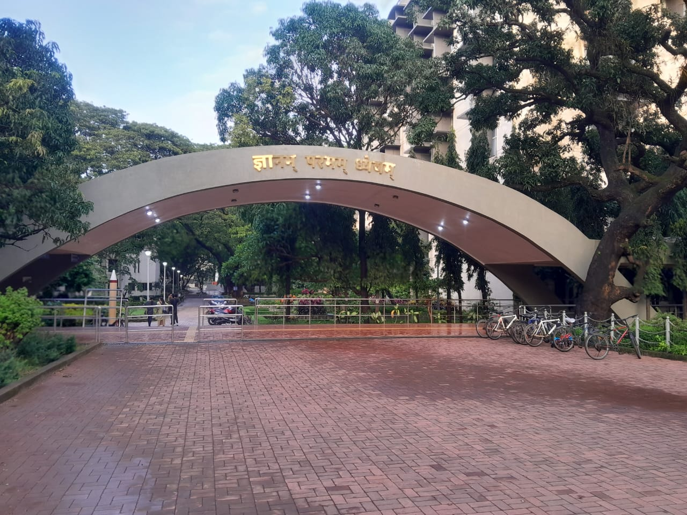
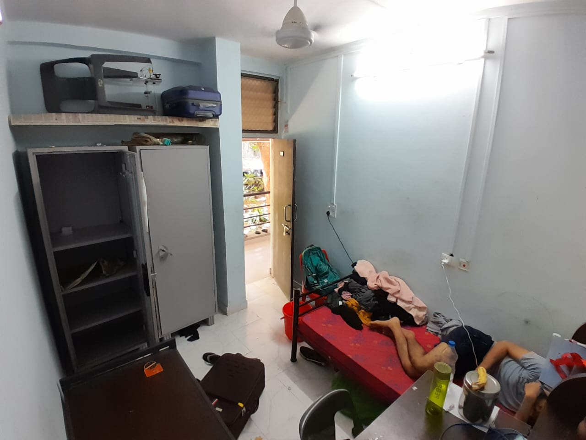

Hello! I'm Khushahal Varhat , currently in my third year at IIT Bombay, having successfully completed four enriching semesters. Over the past two years, my journey in the institute has been a blend of learning, exploration, and active involvement in various activities. I’ve had the opportunity to work with several Institute Bodies (IBs), serving as an organiser and coordinator in major campus events such as Mood Indigo, Techfest, and E-Cell. These experiences have not only enhanced my organizational skills but also allowed me to collaborate with diverse teams and manage high-impact events. In addition, I’ve contributed as a mentor for initiatives like XLR8 and the RC Plane Competition, helping junior students navigate through technical challenges and develop their interest in robotics and aeromodelling. When it comes to interests and hobbies, I enjoy exploring new places and immersing myself in different experiences. I’m an avid traveler, always keen on discovering something new. Being health-conscious, I make it a point to include jogging and sprinting in my daily routine. I also love playing cricket — a sport that has always energized and motivated me.
My first day at IIT Bombay was a memorable blend of excitement and curiosity. I arrived on campus a bit earlier than most others, which gave me the rare chance to meet just a handful of students on that very first day — our initial interactions took place in the hostel mess, over casual conversations and shared anticipation of what lay ahead. The campus had a peaceful, almost magical vibe, amplified by the gentle monsoon rains. With no set plan, I spent the day simply exploring the campus in the rain, taking in the surroundings, observing how people lived, and trying to get a feel for the IITB lifestyle. Everything felt fresh, new, and full of potential. Unlike many who rush to climb Sameer Hill on day one, I took my time. In fact, I didn’t make it there until after my second-semester end-sem exams — and honestly, that made the view feel even more rewarding.
My first night in the hostel was surprisingly peaceful — and a little unusual. Since I had arrived earlier than most of my batchmates, the wing was almost empty. Even my roommate had gone off to visit some relatives, so I had the room all to myself. At one point during the evening, a few professors came around doing rounds, probably checking in on the freshers. They stepped into my room and asked, "Koi ragging toh nahi hui?" I couldn’t help but laugh as I replied, "Abhi tak toh kisi se mila hi nahi!" The professors burst out laughing — and so did I. It was one of those light-hearted moments that instantly made me feel a little more at ease in this new environment. That night, sleeping in an unfamiliar place, I actually went to bed at 11 PM and woke up at 5 AM — without any alarm! It felt surreal. Honestly, I wish I still had that kind of sleep schedule — but now, I’ve gotten way too comfortable in campus life.
For me, Techfest and Mood Indigo weren’t just college events — they were an escape from reality. Amidst the routine cycle of lectures, labs, and long afternoons that often left me drained, these fests brought a refreshing change. They helped me step away from the academic grind and immerse myself in something truly vibrant and energetic. Whether it was volunteering, coordinating, or just soaking in the atmosphere, every moment felt alive. I got to meet new people, work with diverse teams, and experience the joy of creating something bigger than myself. Most importantly, these fests reminded me that college is not just about academics — it's about living in the moment, growing through interactions, and creating memories that stay long after the fest ends.
From Data Structures to Group Projects, the academic rigor at IITB has pushed me to grow. I've developed skills in teamwork, coding, time management, and more.
Ask me anything about IITB life: